来源：https://zcnu3g5zn3md.feishu.cn/docx/ZNAldClrFo2jJAxf0BNcUCcTnfQ
大家好，我是柚柚可乐 ~
一枚再普通不过的互联网小白！通过生财赚到互联网的第一桶金~
7月份加入生财，9月份第一次参加航海，航海期间，成功跑通0~1
并且靠着4.99的低客单，日入550+
单日引流150+人，成交110+单！单篇笔记37W，多篇w笔记
一个再普通不过的普通人，唯一算得上人生成绩的就是考了一本教资证。
来了生财后，发现大佬云集，好多日入w，周入w，也曾感受到了自己渺小，甚至怀疑过自己是不是低人一等，不管是认知，赚钱能力，执行力，都不如别人。
后来突然清醒过来，为什么一定要跟那些大佬比？
这不是给自己制造焦虑吗，心生佩服后，自己又没有大佬们的基础，做不出质的改变，只会越来越焦虑，变得功利心太强，浮躁！
从进入生财再到参加航海，再到跑通0~1。
起初一直抱着一个心态，生财这么贵的门票，真的不是割韭菜？？？
来一段时间后，参加航海实战，抱着白嫖试一试的心态，参加了小红书虚拟航海，历经多重磨难，多次想放弃，咬牙坚持2个多月，成功开启网赚人生~
十月份才几百，坚持到12月迎来高峰
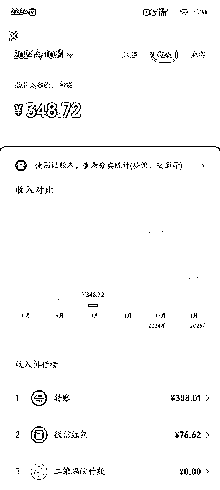
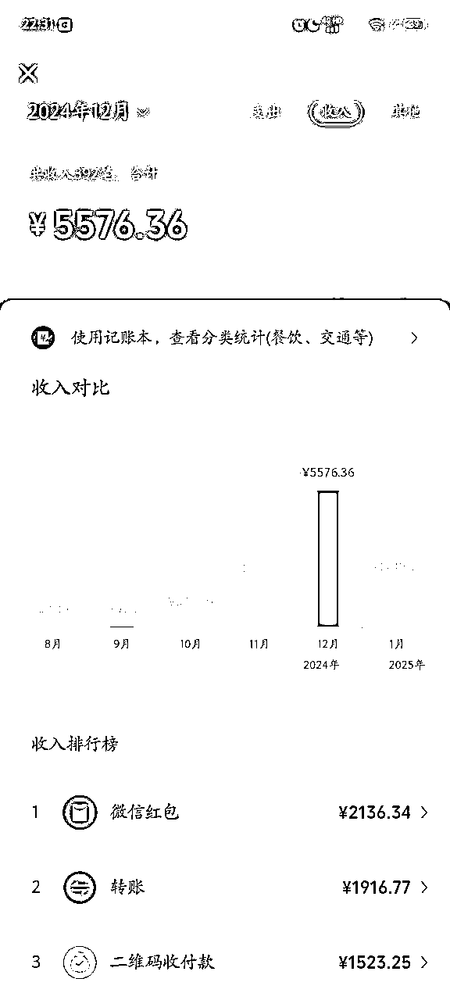
今天主要分享的是以下几个主题:
1.航海期间遇到困难想放弃，如何坚持
2.经历众多风波，如何稳住心态
3.被封账号，同行恶意举报的经验与心态
4.寻找对标账号，提高账号权重小技巧
5.新手如何快速跑通0-1
6.关于提高账号周期，引流私域成交小技巧
兴趣大于一切，做事能否成功，兴趣至关重要。
毕竟长期坚持却无正反馈，人难免沮丧想放弃，而兴趣能让人主动付出，遭遇挫折也不轻易言弃，成为坚持下去的动力，提高成功的概率。
小红书用户群体大概都是以女性居多，从十几岁到三十几岁，学生，教师，宝妈等等
小红书流量大，用户素质高，需求也多。
小红书虚拟资料适合普通人快速上手，不需要大额投资，同行是最好的老师，认真找到优秀的对标账号，剖析同行笔记的构成要素后，自己就也能开启网赚之旅。
（当然那时候还没进生财，不懂引流的概念和方法，只是想回点血）
（没错，0启动资金！！🤩）
第一次做项目期间遇到的困难
1.不知道怎么找对标
2.不知道怎么建立对标库
3.笔记爆了，但是 0 人加微信
4.一报价，客户就没消息了
5.一直没有正反馈，笔记被举报
6.突然笔记没流量了，想放弃
7.遇到平台流量机制改革，被封账号
航海手册 5.1.1 什么账号值得对标?
1.低粉高赞，赞藏量＞粉丝量
（评论＞收藏＞点赞）
2.发布时间为1个月内
（注意:是发布时间，非最后编辑时间）
如下图:编辑于，非首次发布时间，参考不准确，尽量找没有带“编辑于”
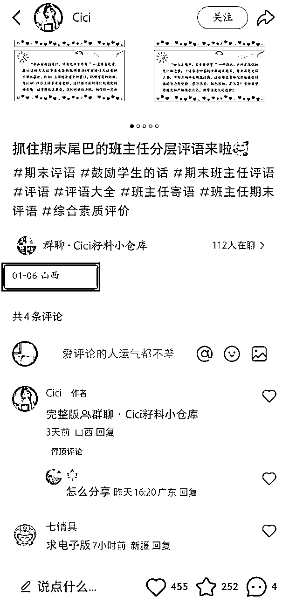
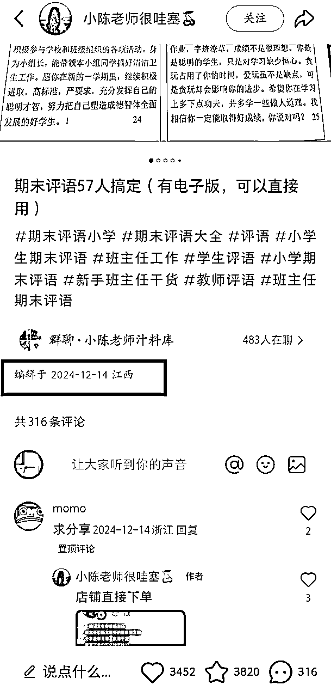
3.看账号主页，所有作品爆款量
（作品很多，但只有1条作品爆了，大概率是运气好，或是投流了，这也就是为什么别人发这么爆，我抄了过来为什么不爆的原因）
4.建立对标库
主要从以下几个方面↓↓
【账号链接、对标日期、粉丝量、赞藏量、评论量、发布作品频率、引流方式、微信号、朋友圈内容、套餐价格】
是不是觉得麻烦？
但是分析对标越细致，成长的就越快！！
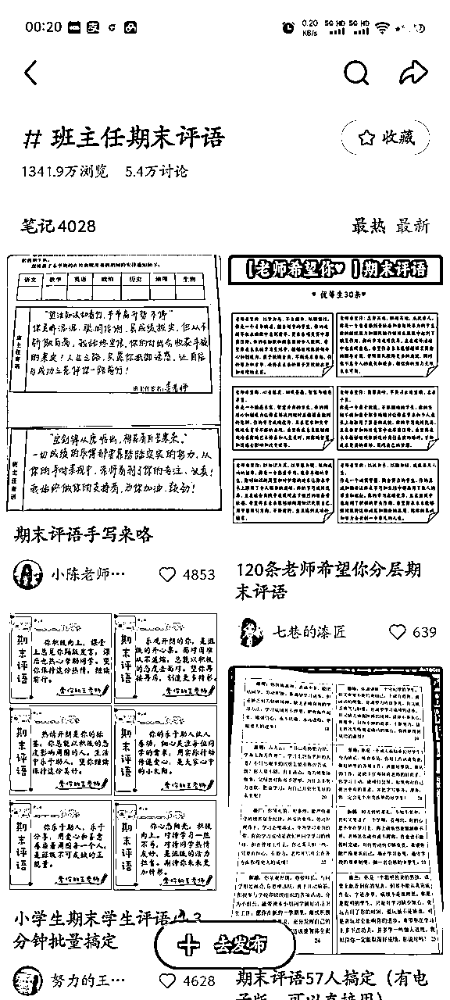
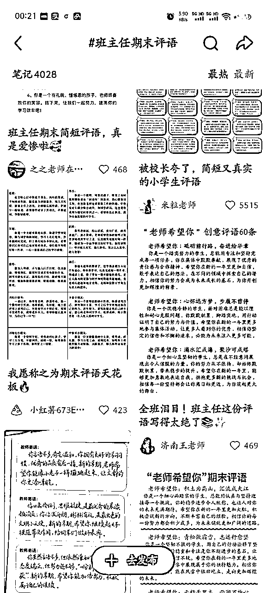
第一阶段:
在航海期间发布的第5条作品，好不容易有了一条突破500小眼睛，50多赞藏，但是只有赞藏没评论，后来发现，找到问题所在…
我没有在评论区留钩子，进群➕微，真的是愿者上钩😂
第二阶段（想要放弃）:
明明已经找出很多问题，优化钩子后，依旧没有人佳薇，但是作品已经达到150➕赞藏，内心超级挣扎，感到可惜，好不容易的流量，就这么错过了？
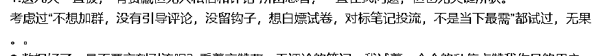
群里举手提问，教练建议试试回关粉丝，我又私信粉丝但依旧没人➕微。。
此时超沮丧😭因为航海已过半，没有1人➕V
第三阶段（峰回路转）:
挣扎许久，找到我的志愿者（秋秋桂）说了我当时的烦恼，然后她就帮我向教练推荐了我的日志，我的日志被点评了！！终于破案了
教练问我做的是哪个学段，我说是九年级学生中考，立马就及时止损了
希平教练和拾一教练，纷纷表示
1.小升初，初升高，这几个阶段纷纷有人专门免费送资料，没有太大优势
2.初中的学生，大部分都是抱着白嫖心理
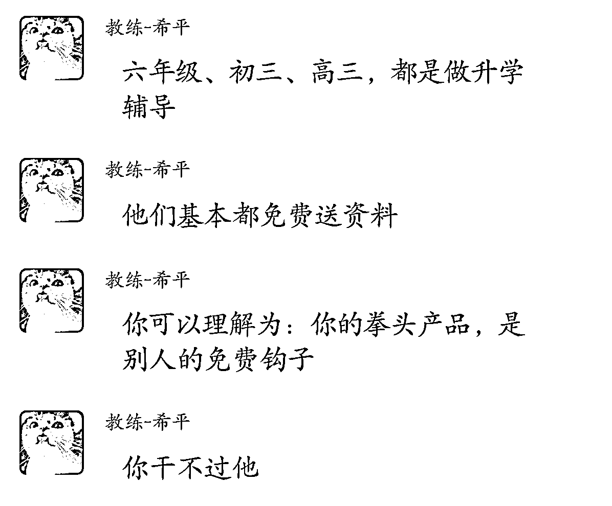
第四阶段:
及时止损，更换赛道的第二天，发布的第一天作品，我就成功跑通0-1！
有时候选择，大于努力！
机会是自己争取的，有问题积极在群里举手提问，实在不好意思，就跟自己的志愿者聊聊目前卡点！
（生财的志愿者，都超级热情乐于助人！！比如我的志愿者——秋秋桂）
再次感谢，志愿者秋秋桂，以及@拾一和@希平教练对我的帮助，因为那一次的点评，群内的聊天，于是就开启了我的第二单，第三单…到现在，跑出了单条小眼睛 37w+ 的笔记，多条1w+、2w笔记
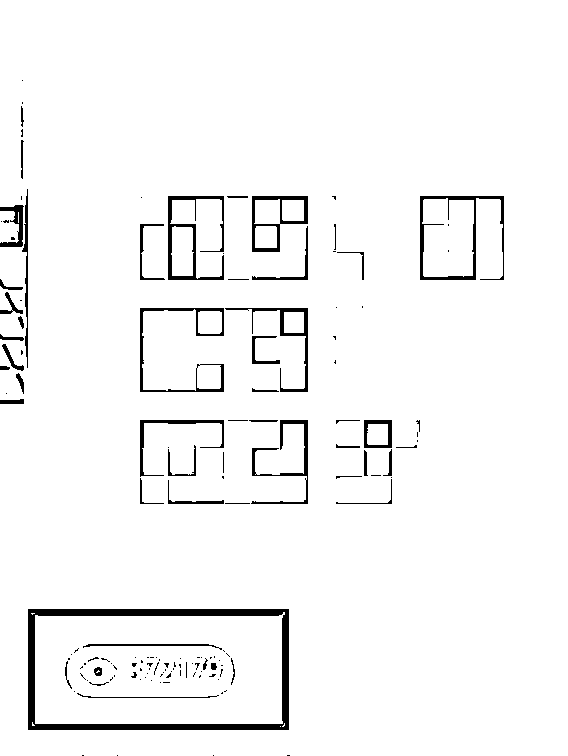
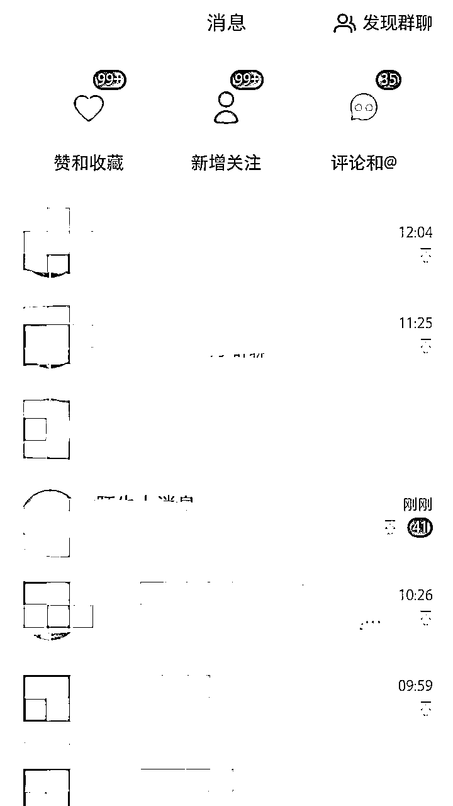
如果按照平时的性格，当时卡在第3步，我可能就放弃了，正是因为有一起同行的人，有可以一起报喜报忧的志愿者，坚持不懈的寻找原因，寻找方法，最后找到原因，跑通0-1，越做越大！！！
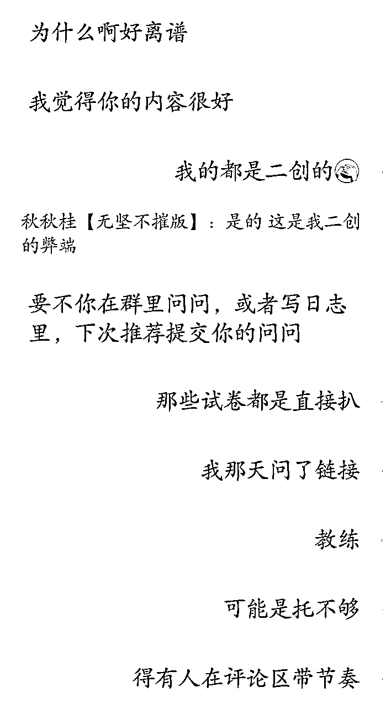
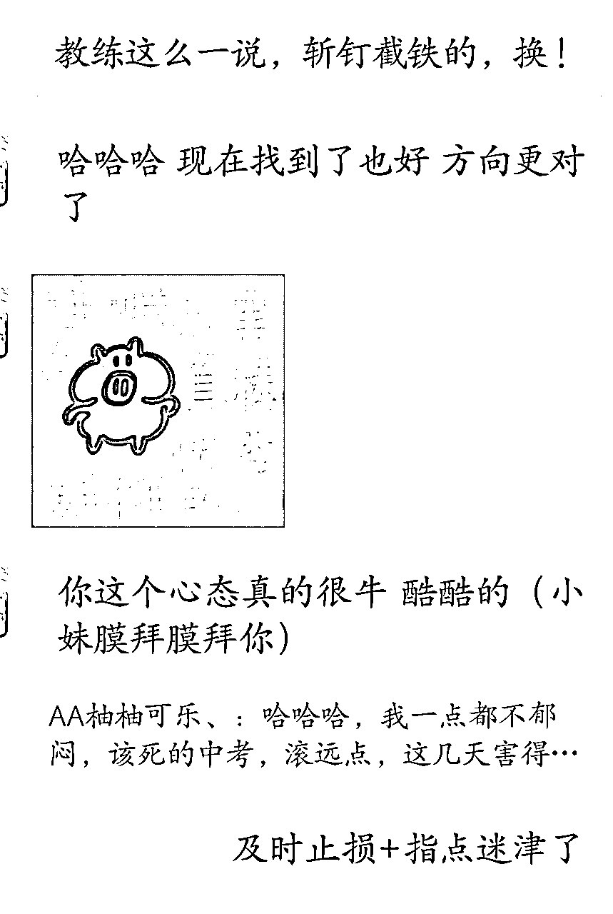
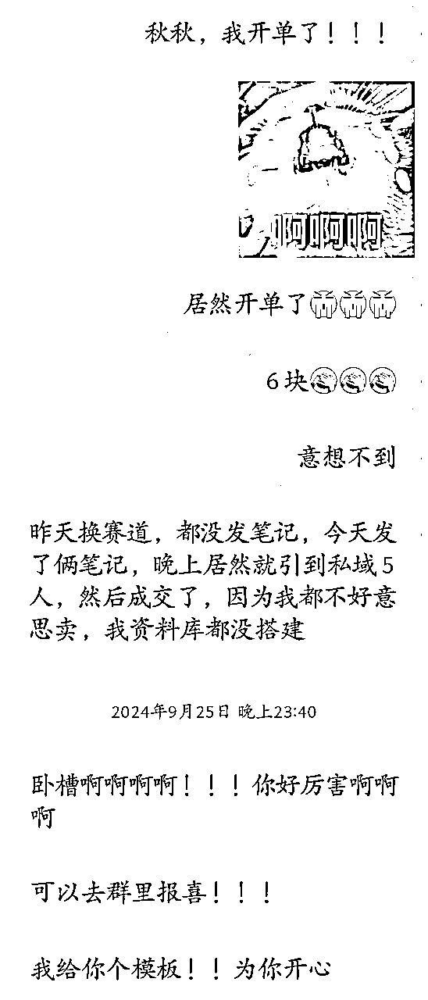
从10月开始，做这个赛道2个月，受过双11影响，以及12月份平台大量封号影响，对我没有影响吗？
当然有！！我陆续被封了两个号！
怎么稳住心态？靠什么坚持下去？
“没封过小红书号，出去都不好意思跟别人说做过小红书”
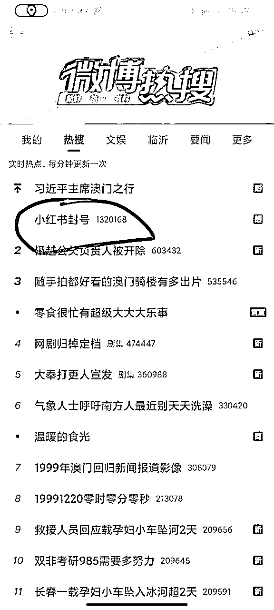
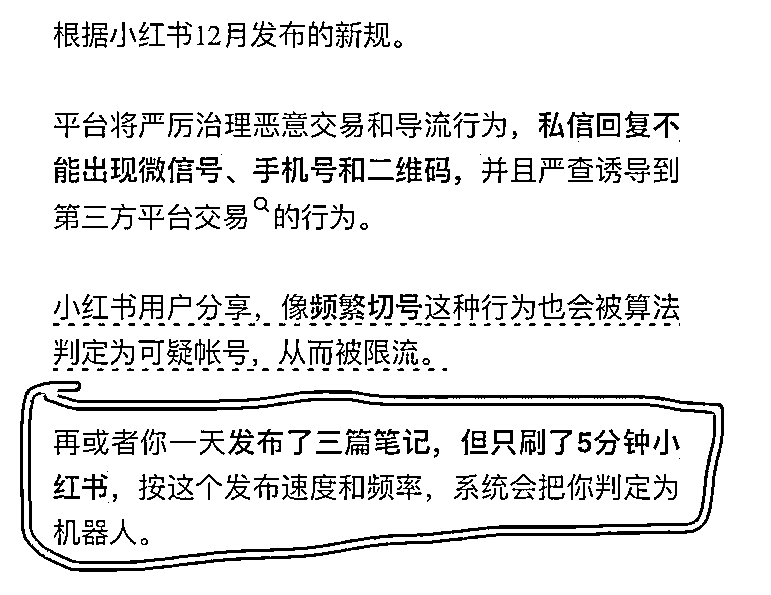
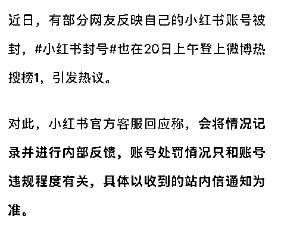
1.多次被同行恶意举报
2.账号权重太低，上来发的营销内容太多
3.心急，忍不住用私信留下了➕微信的方式！
不回私信，不回价格
私信仅🉑发群聊，用群聊的方式引流
不在群里闲聊，粉丝问有偿还是无偿，一概不回，以免留下小辫子被同行举报！
（如何筛选同行，延长账号生命周期的小tip在最后一部分）
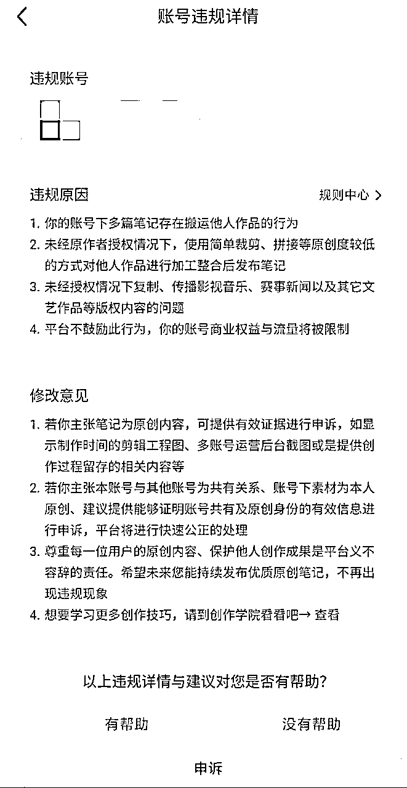
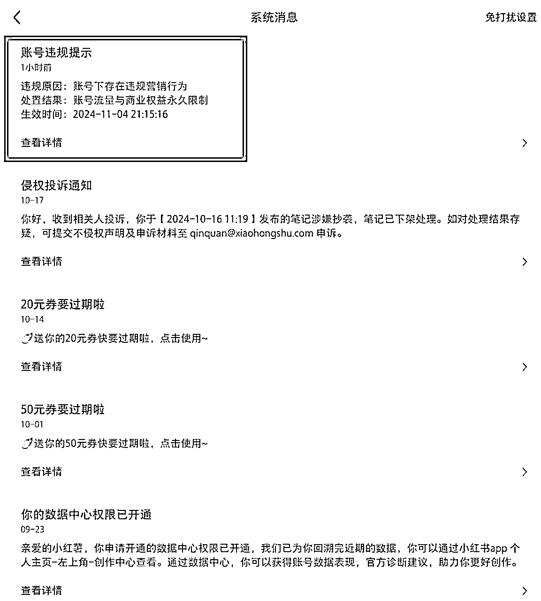
1.我确实是违背了，小红书的平台规则，进行引流了，但同时也给我带来了不少额外收益，反而要感谢有小红书这个平台，能让普通人快速搞到小钱💰
2.一次次的封号经验，给了我快速寻找不足的途径，通过平台给的提醒，让我更了解平台机制，增长经验了
3.放低期待，脚踏实地细致做项目，惊喜永远都是突然降临！
一次两次的封号，然后在11月一周快速起号，不到30天，做到了千粉账号，月入突破四位数
在不断的坚持下，在12月迎来高峰，单日突破400➕
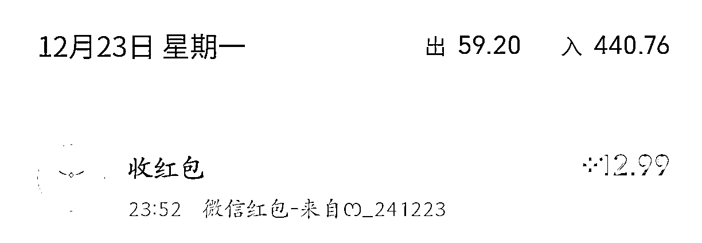
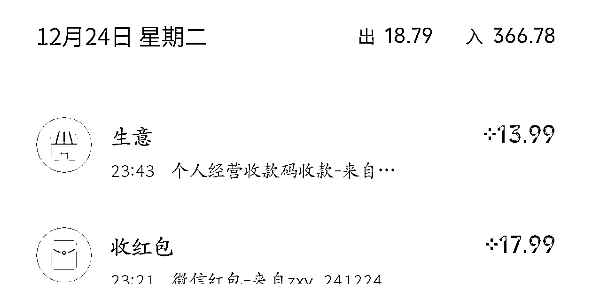
以及元旦单日以4.99低客单，引流150+人做到日入500➕
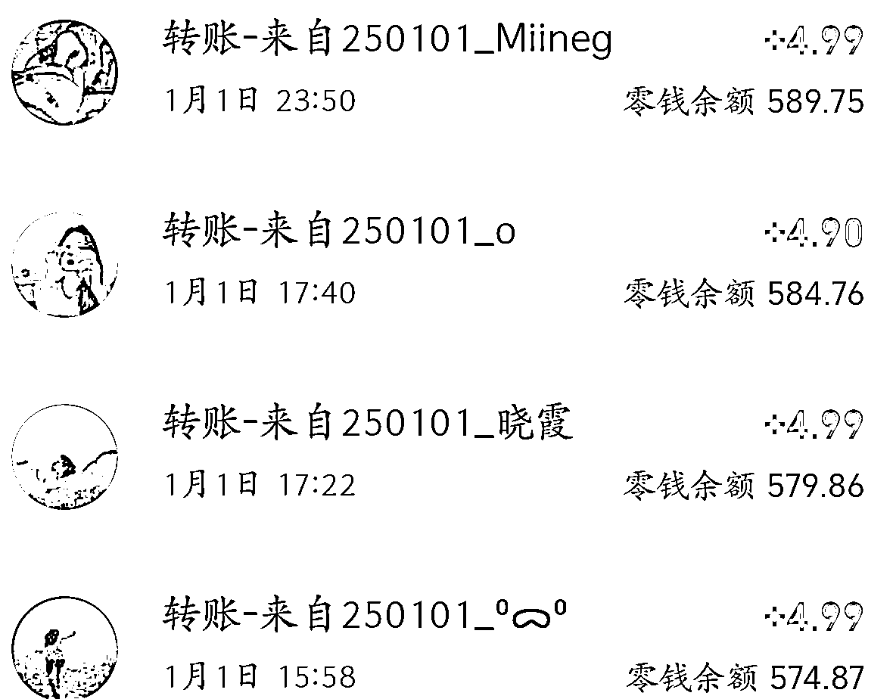
没经验那就跟着航海手册走！不要多想！！
项目第一步，我卡了2天。不知道我要做什么赛道，害怕我做不好，担心赛道拥挤，害怕没成果。。
赛道是否拥挤，只有亲身试过才知晓。即便它看似人满为患，但在没尝试之前，一切都还是未知。
就像那句老话说的，“纸上得来终觉浅，绝知此事要躬行”嘛。
新手，没经验不知道方向，就坚定的跟着航海手册，因为没成功过，就不怕失败。
航海手册这么详细，这么多实操，新手只要做到听话照做，把手弄脏，就已经打败70%的人，不要给自己设立太大的目标，跑通0~1，挣到第一个1块钱，就是成功！
先完成，后完美
项目初阶段，我会因为纠结账号人设纠结一天，换头像，换背景，个性签名，把重点放在了非必要的事情上
不要把内在的原因，都归咎于外在原因
发布作品数据不好，总觉得是自己ip不干净，是连了wifi的原因，纠结一机一卡，
多考虑笔记的问题，是不是笔记找的不好，痛点不是用户当下的真正的痛点，是不是笔记发的不够多，账号刷的时间太少？
后来，实操下来发现，连了wifi也没关系，新手小白，完全没必要纠着ip问题不放，踏出第一步，发布作品，做了才知道！
优秀的内容制作，才是笔记爆的关键！这需要我们每天去刷对标，分析对标，分析作品，养成网感
思考一下，自己以往有什么经验基础吗，在互联网，有真正成功做一件事，有没有一件能让你坚持到现在的好习惯？
制定可实现的短期目标，逐步建立信心。一个账号日更3条作品，➕100个同行，建立100和
如何定义成功？
是跑通0-1，还是通过这次航海，我的收获，结交了一位圈友，解锁了一次新的技能，养成了一个好习惯等
成功需要很多经验积累，各种因素叠加！
1.账号权重不够高
（养3天，评论＞收藏＞点赞，养号期间多评论）附带小红书养号的链接
2.标题或文字中含有违禁词/浮夸
（附带违禁词列表）
3.笔记选题不够痛点
下面做一道选择题，测试你的选题能力
1.今天是12月31日，我在做教师赛道，我要卖资料，想想今天会火的是什么选题？
A.期末考试
B.期末评语
C.元旦课件
D.寒假作业布置
答案: C
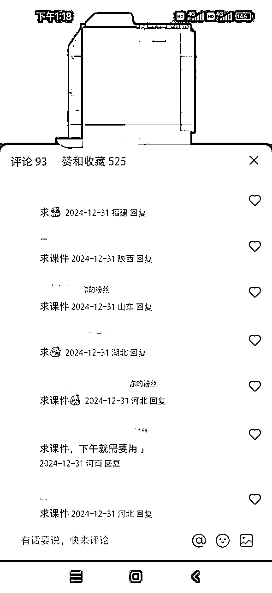
作品是提前一周发的关于元旦晚会的课件，12月31日突然爆了！！
由于这个微信是新注册，一直没用这个账号引流，但是元旦，突然都是加到这个微信了，导致一天➕了150人，微信团队弹了风险验证。
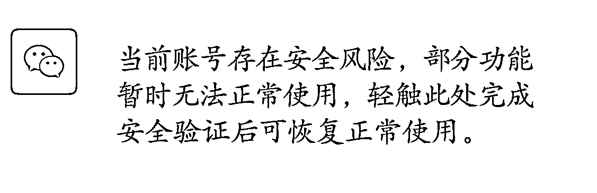
但是另外一个一直用来引流的老账号微信，一天加100多人完全没问题
所以如果作品爆了，及时更换权重高的引流微信，不要用3个月以内新注册的微信承接！
更多详情可跳转航海手册 第六章(实现引流变现)
既可以涨粉，又可以筛选同行，增加新号权重低，营销重被封风险，以及避免同行入群恶意举报，截流抢顾客！
（弊端❗❗❗需要手动通过，如果不及时会流失➕V率，客户很急就会找到其他同行，所以根据需求选择）
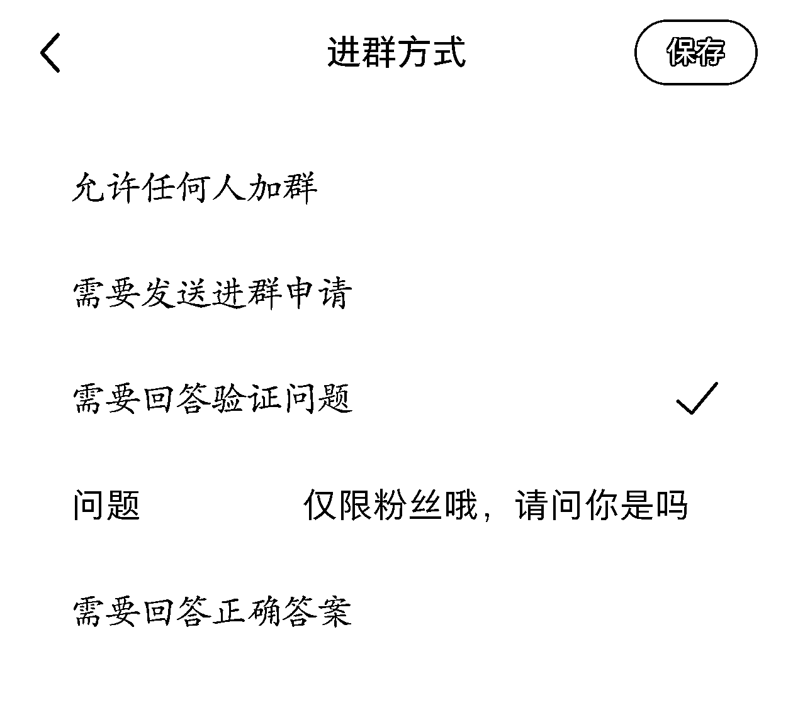
前期账号权重低的时候，开启群验证，快速涨粉
当账号粉丝大于500或大于1000粉后，再根据需求选择关闭群验证，笔记爆了也可以关掉群验证，但是要注意及时排查疑似同行的账号
1.直接去主页看历史发布的笔记类型
2.账号是个白号，没有发过笔记
关注页和粉丝几乎没有，大概率为同行
小概率为不怎么使用小红书的用户，因为头像都懒得换，关注列表都没有，肯定是属于不经常活跃的用户
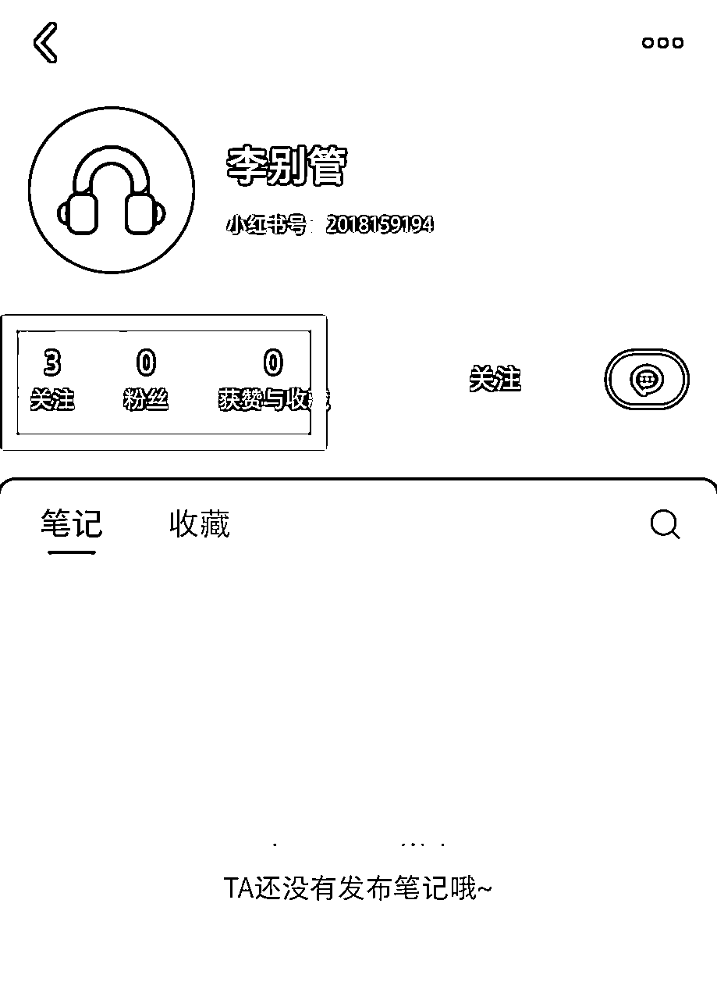
3.入群账号的收藏作品，和关注列表
如果几乎都是一些同行发布的作品，没错，她就是同行小号，作为一个老师真的会一点娱乐项目都没有？美食，育儿，减肥，都是女性必看的内容
下图所示，这个账号关注列表都是同行，收藏的作品也是同行的内容
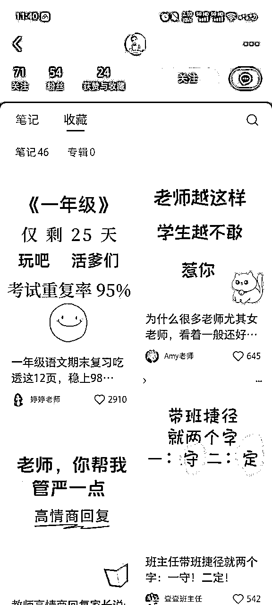
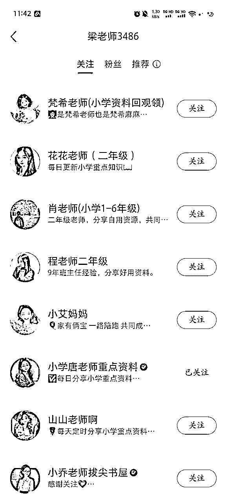
（开启自动通过好友，设计破冰语“你好呀🤝请问有什么可以帮助到你的？）
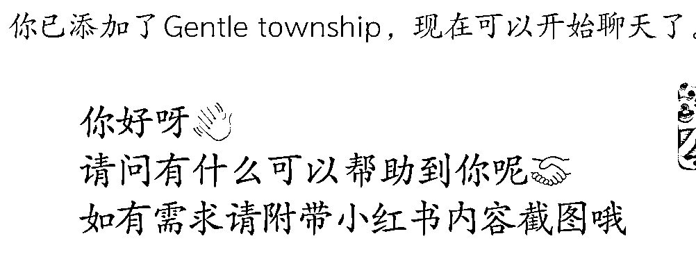
附带小红书内容截图的好处
1.可以反映客户从哪篇作品内容来的，后续可根据➕V后的截图，总结分析哪篇作品进献高，分析该篇笔记封面，选题，内容，找出爆点的具体原因！
2.筛选同行的微信，微信号简短有规律或乱码，看朋友圈
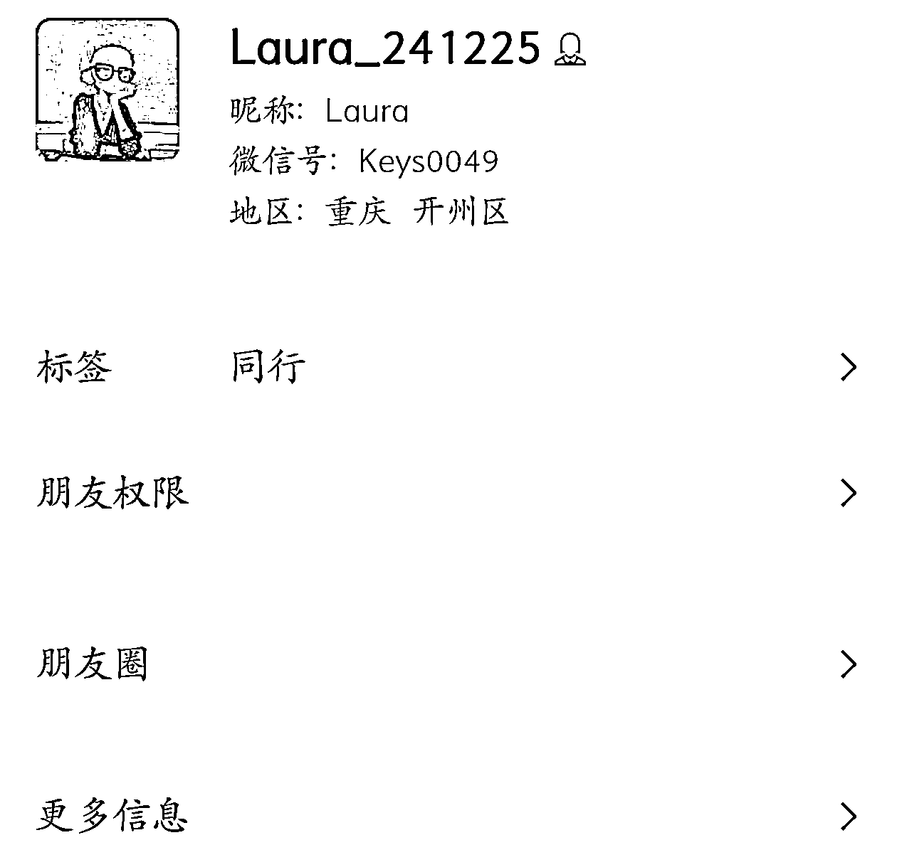
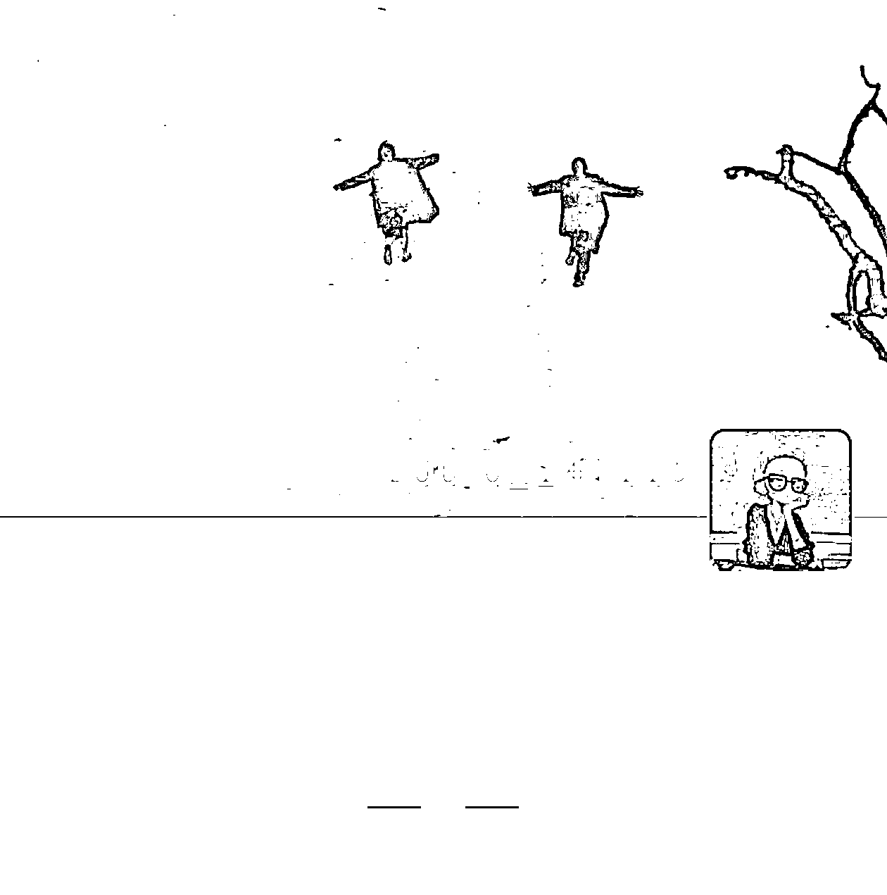
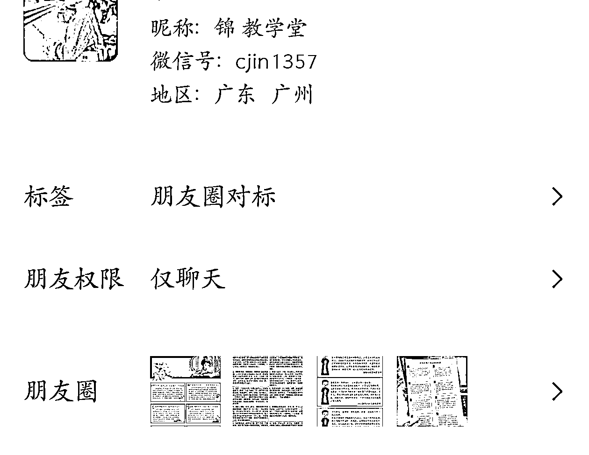
亲亲，整理不易，小小有偿，资料获得方式:
1、精美****(你在公域上引流的资料)9.9/份(赠送(可给赠送一些价值不高但是又有用的资料，如作业登记表)
2、打包全部班主任开学资料包, 49.9(100+套)
3、现在有开学季全年最低入会员活动，终身免费下载价值 5w+小学教师资料库，让你轻松面对开学。(80%老师选择)
·回复相应数字，我发资料给你哈。
具体内容跳转航海手册6.2.3.4如何设计组合套餐
前期客户少，报价后，客户没下文了，可以送上有用但非刚需的小资料，拉进用户好感度
甚至前期可以和用户多交流，能找到用户的痛点，比如管不住学生，课教不完，班级卫生差等等
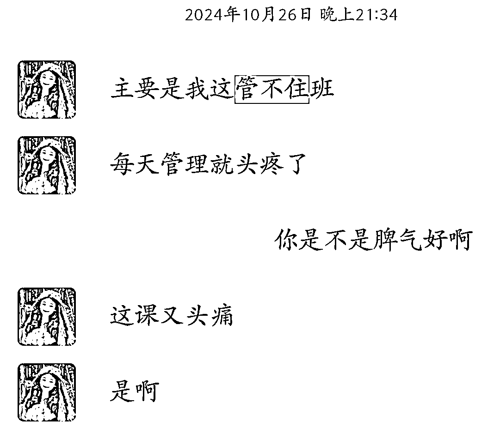
互联网新手小白通过第一次航海，拿到小1w的成果，在生财很常见，但是对于我而言，已经超出预料，能挣几百都是额外的收入。
我更在意的是21天航海期间，带给我了太多变化，养成了每日总结的好习惯
结交了几位好圈友，因为这几位圈友，养成了阅读习惯，开启了表达者模式，报名了志愿者，写下了第一篇长篇复盘总结，做出了很多人生第一次！真的超级感谢这一次航海，以及通过航海结交的几位好朋友😊
@秋秋桂【无坚不摧版】@红烧电饭煲@光之梦
一切，都源于9月份的第一次航海
感恩相遇！
相信生财里像我一样的普普通通的新手大有人在，踏实做自己，不盲目羡慕，超越自己就是成功！！！